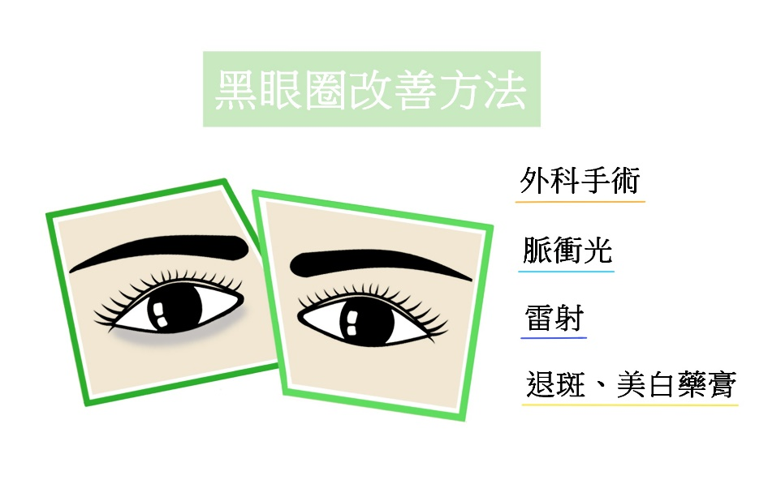

造成黑眼圈的原因相當多，尤其現代人工作壓力大，熬夜、睡眠品質不良，稍不注意黑眼圈就悄悄爬上臉，對許多愛美人士而言，實為莫大的困擾，其實，黑眼圈的改善是有方法可尋的，首先必須要先瞭解黑眼圈的形成原因，才能有效的對症下藥！
針對黑眼圈不同的形成方式，各有不同的改善方法：
因靜脈血管瘀積所形成的黑眼圈，可用外科手術電燒灼瘀積的血管效果最為顯著，手術方法可選擇從結膜內著刀或從下眼睫處著刀，在局部麻醉下，手術時間約1小時，約2個星期後可恢復。此手術可合併眼袋手術一同治療，同時改善浮腫的眼袋以及黑眼圈。
使用雷射治療黑眼圈，首先必須針對黑眼圈的不同成因來選擇雷射機種，一般而言，若是治療靜脈血管淤積所造成的黑眼圈，即可選擇血管雷射治療；而表面性的色素沈著，則適合用除斑雷射治療，有時可合併使用達到最大的效果。
雖然脈衝光不同於雷射的專一性(單波長、平行光)，而是一段性的光波(520nm-1200nm)，可涵蓋除斑、血管及除皺作用的光波，因此脈衝光亦能用於黑眼圈的改善。
退斑、美白藥膏是治療黑眼圈最易取得的保養品，但是對已形成的黑眼圈治療成效不大，對於此類藥膏，反而應將其視為預防黑眼圈形成的保養品來使用效果較佳。
由於後天性黑眼圈的形成是累積的，一旦生成則較難以習慣的改變來改善(如不再熬夜、抽煙等)。因此黑眼圈的預防遠勝於治療，平時即需有充足的睡眠並做好基礎的美白、保濕、防曬等保養工作，減少熬夜、抽煙及搓揉眼睛的習慣，即使是擦保養品或是眼部的適度按摩，亦需放輕手勁輕輕按摩即可，以保明亮的雙眸。另外，平常臉部表情動作大者，在眼部周圍亦容易產生皺紋，皺紋在眼部生成後，會因為光線角度的關係，讓眼睛看起來像有黑眼圈一樣黯淡無光，此時適度的施打肉毒桿菌素除皺，則可消除此種黑眼圈的假象。
治療前
治療後